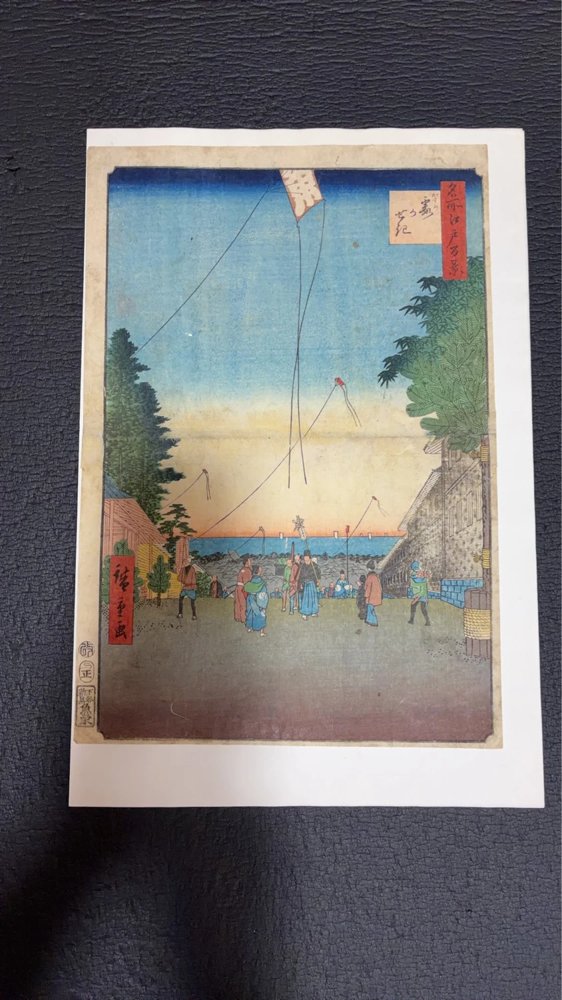

商品詳細

作品概要
凧が上がる空、坂道を行き交う人々、大名屋敷、江戸湾の遠景が描かれた作品です。東京藝術大学大学美術館や東京国立博物館などの公的資料では、歌川広重（初代）による「名所江戸百景 霞かせき」として確認できます。
公的資料では、同図の制作年代は安政4年（1857）と記載されています。ただし、ここに掲載している現物写真の印刷物について、制作年代・摺りの時期や真贋を同一視して断定していません。
状態
状態の詳細については現在確認中です。確認できた情報を、写真とあわせてご案内します。
作者・作品名について
作者は歌川広重（初代）、作品名は「名所江戸百景 霞かせき」として掲載しています。
本品の真贋、摺りの時期、制作年代、初摺・後摺・復刻等の別については、現物確認が必要なため現在断定していません。
ご注意
公的機関の作品情報は、シリーズや原作品の一般的な情報を確認するために参照しています。手元の印刷物の制作年代や真贋、状態、販売可否を示すものではありません。
この品についてのお問い合わせ方法は現在準備中です。整い次第、お問い合わせページにてご案内いたします。
お問い合わせへ